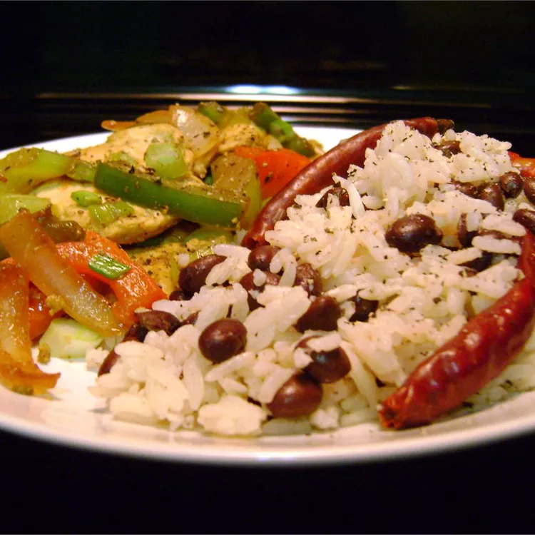

Coconut Rice and Beans

Easy, delicious rice and bean dish that can be served as a main vegetarian course or side dish to Latin and Asian foods.
Ingredients
- 1 tablespoon butter
- ½ shallot, minced
- 1 cup uncooked jasmine rice
- ¾ cup coconut milk
- 1 cup water
- 1 pinch ground nutmeg
- 1 (15 ounce) can black beans, rinsed and drained
Steps
- Melt the butter in a small saucepan over medium heat. Stir in the black beans, and cook a few minutes until hot.
- Stir in the shallot, and cook until the shallot has softened and turned translucent, about 3 minutes.
- Add the rice and stir until coated with the butter.
- Pour in the coconut milk and water; season with nutmeg.
- Bring to a boil over high heat, then reduce heat to medium-low, cover, and simmer until the liquid has been absorbed and the rice is tender, about 18 minutes.
- Stir in the black beans, and cook a few minutes until hot.